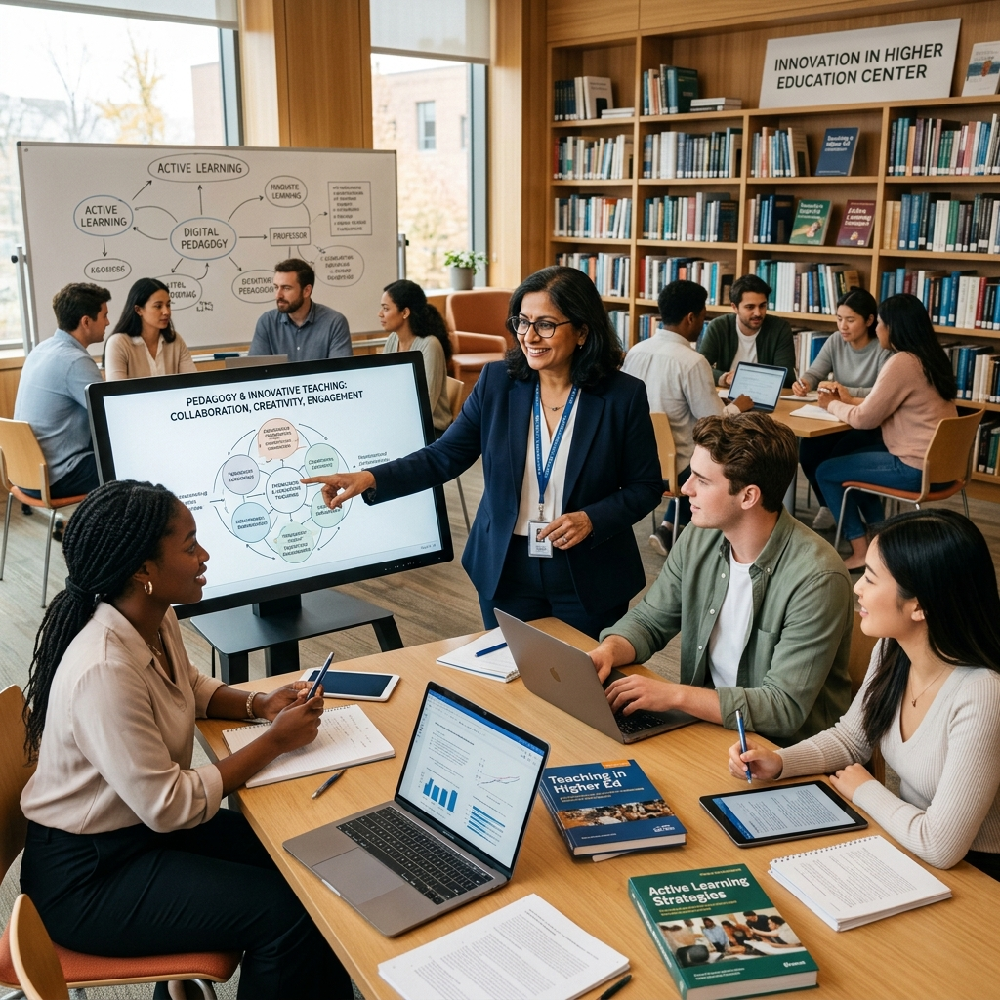

Our Academic Programs

Faculty Development Program on Literature, Language and Media
An intensive program exploring literature studies, media culture, and digital humanities. Designed to enhance academic methodologies surrounding language preservation, archives, and modern scholarly storytelling.
Program Overview
The Faculty Development Program on Literature, Language and Media is a comprehensive 12-day academic initiative organized by the Department of English Language and Literature in collaboration with the Administrative Academic Center, Adamas University, and sponsored by the Association of Indian Universities.
Program Coordinators / Conveners
Dr. Mohua Ahiri & Dr. Pratyusha Pramanik
Literature & Language Studies
Deep exploration of classical and contemporary literary frameworks, with a focus on multilingual scholarship and cross-cultural narrative analysis.
Digital Humanities
Bridging computational tools with humanities disciplines — covering digital archives, text mining, and data-driven literary research methodologies.
Media & Communication Studies
Analytical study of evolving media landscapes, scholarly communication strategies, and the role of digital media in academic storytelling.
Research Methodologies
Comprehensive training in qualitative, quantitative, and mixed-methods research approaches tailored for humanities and social science faculty.
Program Objectives
Digital Humanities
Equip faculty with practical digital tools and frameworks to apply computational methods in humanities research and pedagogy.
Literary Archives
Develop proficiency in accessing, curating, and interpreting literary archives in both physical and digital formats.
Language Preservation
Build strategies for documenting and revitalising endangered languages and indigenous oral traditions.
Media Studies
Critically analyse the influence of contemporary media on academic discourse and public knowledge dissemination.
Academic Writing
Sharpen scholarly communication through advanced writing workshops covering publication ethics and academic style.
Research Methodologies
Master interdisciplinary research design — from problem formulation to data analysis and scholarly presentation.
NEP 2020 Integration
Align departmental curriculum and teaching approaches with the National Education Policy 2020 guidelines and multidisciplinary mandates.
Interdisciplinary Learning
Foster collaborative academic culture by encouraging cross-disciplinary dialogue and co-authored research initiatives.
Program Schedule
Digital Cultures and Sound Heritage
- Speaker: Dr. Shantanu Majhee
- Discussion on digital humanities, sound preservation, auditory culture, storytelling, digital sound archives, and computational analysis of sound and aesthetics.
Digital Humanities and Archives in the Age of AI
- Speaker: Dr. Maya Dodd
- Discussion on digital archives, access to information, governance of archival systems, manipulation of data, curation practices, and digital transformation of archives.
Decoding Digitality: Exploring Cultures and Algorithms in the Digital Age
- Speaker: Dr. Rimi Nandy
- Discussion on algorithmic cultures, digital infrastructures, data-driven systems, social behavior in digital spaces, and ethical digital engagement.
The Changing Nature of Archives Within a Digital Culture
- Speaker: Professor Jayati Gupta
- Discussion on transformation of archives from physical to participatory digital repositories, accessibility, authorship, and digital storytelling.
Language Conservation: Linguistic Issues for Digital Preservation
- Speaker: Dr. Sanjukta Ghosh
- Discussion on endangered languages, digitization, online linguistic archives, digital dictionaries, preservation ethics, and inclusive digital practices.
Tinkering with Texts: Digital Tools and Where (Not) to Use Them
- Speaker: Dr. Debapriya Basu
- Discussion on digital textual analysis, computational tools, interpretation limits, literary criticism, and human-centered digital scholarship.
Indigenous Heritage in Digital Archives
- Speaker: Dr. Rahi Soren
- Discussion on preservation of indigenous culture, oral traditions, ethical archiving, community engagement, ownership, and equitable access.
Digital Humanities and Scholarly Publishing
- Speaker: Prof. Nirmala Menon
- Discussion on digital publishing ecosystems, open access publishing, multimodal scholarship, academic democratization, and collaborative authorship.
Journey of Film from Celluloid to Digital and Effect
- Speaker: Partho Chakraborty
- Discussion on digital cinema transformation, filmmaking evolution, digital production, audience reception, and film aesthetics.
Research Methodology: Qualitative and Ethnographic Methods
- Speaker: Dr. Priyanka Tripathi
- Discussion on ethnographic research, digital cultures, human-centered methodologies, online communities, and ethical research practices.
Garbo-Politics and Media
- Speaker: Dr. Sayan Dey
- Discussion on digital media toxicity, information pollution, sensationalism, media governance, ecological thinking, and cultural engagement.
Video Criticism: A Transmedial Perspective
- Speaker: Dr. Rajdeep Roy
- Discussion on audiovisual criticism, multimedia storytelling, video essays, digital pedagogy, and modern forms of academic critique.
FDP Highlights
Expert-Led Sessions
Eminent scholars from leading universities across India deliver research-backed sessions on core themes of literature, language, and media.
Hands-On Workshops
Practical, skill-building workshops on digital archiving, academic writing, and research methodology ensure real-world applicability.
AIU & AADC Certification
Participants receive a jointly issued certificate from AADC, Adamas University, and the Association of Indian Universities — a mark of academic distinction.
NEP 2020 Aligned
All content is curated to align with NEP 2020 mandates — supporting multidisciplinary learning, Indian Knowledge Systems, and outcome-based education.
Interdisciplinary Network
Build lasting academic connections with faculty from diverse disciplines, fostering collaborative research and publication opportunities.
Resource Materials
Participants receive curated reading lists, research guides, and workshop materials to continue learning beyond the program duration.
Program Gallery


Faculty Development Program on Leadership and Professional Development
A two-week faculty development initiative focused on leadership enhancement, professional communication, emotional intelligence, academic administration, mentorship, resilience, and strategic growth in higher education environments.
Program Overview
The Faculty Development Program on Leadership and Professional Development is a comprehensive two-week academic initiative organized by the Academic and Administrative Development Centre (AADC), Adamas University. It focuses on leadership enhancement, professional development, communication skills, emotional intelligence, resilience, academic mentoring, strategic leadership, and institutional growth. Sessions were conducted daily from 3:30 PM – 4:30 PM.
Program Conveners
Prof. Moumita Mukherjee & Dr. Kausheyee Banerjee
Program Coordinators
Dr. Kausheyee Banerjee & Dr. Samhita Sanyal
Target Audience
Faculty members, researchers, and academic administrators
Program Mode
Online (via Zoom)
Registration Fee
100 INR (37 Participants)
Program Objectives
Transformational Leadership
Developing strategic vision and collaborative practices to lead modern academic institutions.
Professional Communication
Enhancing communication, presentation skills, and public speaking techniques for professionals.
Academic Administration
Equipping faculty with the tools needed for effective academic administration and governance.
Emotional Intelligence
Building emotional awareness, empathy, and interpersonal understanding for team management.
Research Excellence
Strengthening scholarly contribution, publication ethics, and research quality standards.
Women in Leadership
Addressing gender inclusion and expanding leadership opportunities for women in academia.
Mentorship & Coaching
Implementing mentorship models to guide faculty-student professional development.
Resilience & Mindfulness
Fostering emotional resilience, stress management, and maintaining professional balance.
Program Schedule
Transformational Leadership in Academia
- Speaker: Prof. Rudra Prasad Saha, Dean, SOLB, Adamas University
Discussion on transformational leadership practices in academia, collaborative institutional growth, strategic vision, and faculty leadership development.
Research and Publication Excellence
- Speaker: Prof. Moumita Mukherjee, Dean, R&D, Adamas University
Focused on research quality, publication ethics, academic writing standards, and strengthening scholarly contribution in higher education.
Adaptive Leadership in a Changing Educational Landscape
- Speaker: Dr. Sabyasachi Majumder, Associate Director, Academics (School), Adamas University
Explored adaptive leadership strategies, institutional flexibility, innovation, and leadership challenges in modern education systems.
Technology-Driven Leadership
- Speaker: Prof. Sajal Saha, HoD, Department of CSE, Adamas University
Focused on technology-driven leadership approaches, digital transformation, and the integration of modern tools in academic administration and education delivery.
The Art of Effective Communication and Public Speaking
- Speaker: Prof. Ujjwal K. Chowdhury, Director General, MSEED, Andheri, Mumbai
Focused on professional communication, presentation skills, audience engagement, confidence building, and public speaking techniques for academic leadership.
Women in Leadership: Challenges and Opportunities
- Speaker: Prof. Snehamanju Basu, Dean, Student Affairs, Adamas University
Discussion on gender inclusion, leadership opportunities, institutional participation, and challenges faced by women in professional and academic spaces.
Resilience and Mindfulness for Professional Growth
- Speaker: Dr. Jhili Das (Tewary), Assistant Professor, Psychology, St. Xavier's University, Kolkata
Focused on emotional resilience, mindfulness practices, stress management, and maintaining professional balance in demanding academic environments.
Mentorship and Coaching in Academia
- Speaker: Prof. Radha Tamal Goswami, Pro-Vice Chancellor, Adamas University
Explored mentoring practices, academic guidance, collaborative growth, and faculty-student professional development models for institutional excellence.
Emotional Intelligence for Effective Leadership
- Speaker: Dr. Sweta Sah, Assistant Professor, Sister Nivedita University
Discussion on emotional awareness, empathy, leadership communication, interpersonal understanding, and team management in academic settings.
Assignment and Interaction Session
Interactive engagement activities, participant discussions, assignments, and collaborative academic interaction session for reflective learning.
Valedictory Session
Final reflection session summarizing learning outcomes, participant engagement, feedback compilation, and formal FDP conclusion with certificate distribution.
FDP Highlights
Program Gallery



Faculty Development Program on Pedagogy for Meaningful Teaching and Learning: Innovate, Engage, & Inspire
A two-week online faculty development program focusing on pedagogy innovation, student engagement, digital learning, NEP alignment, transformative teaching, multimodal learning, and active learning methodologies.
Program Overview
The Faculty Development Program on Pedagogy for Meaningful Teaching and Learning: Innovate, Engage, & Inspire is a comprehensive two-week online academic initiative organized by the Academic and Administrative Development Centre (AADC), Adamas University in collaboration with the Department of English Language and Literature and sponsored by the Indian Association of Indian Universities (AIU). It focuses on pedagogy innovation, student engagement, digital learning, NEP alignment, transformative teaching, multimodal learning, and active learning methodologies. Sessions are conducted daily from 3:00 PM - 5:00 PM.
Target Audience
Faculty members, researchers, and academic administrators
Program Mode
Online (via Zoom)
Participation
36 Participants
Program Highlights
Innovate
Exploring and applying novel pedagogical approaches for modern classrooms.
Engage
Enhancing student participation and interaction through active learning methods.
Inspire
Fostering a transformative teaching environment that motivates learners.
Technology Integration
Seamlessly blending digital tools and platforms into the teaching-learning process.
Assessment for Learning
Developing effective evaluation strategies that promote continuous improvement.
Multimodal Learning
Implementing diverse teaching modalities to accommodate different learning styles.
Program Schedule
Sports Media Production
- Speaker: Dr. Suman Ghosh, Bath Spa University, UK
Film and Media Studies: Issues and Challenges in Teaching-Learning
- Speaker: Dr. Abhijit Roy, Jadavpur University
Multimodal Classroom Approach - Benefits and Challenges in Implementation
- Speaker: Dr. Tania Chakravertty, Diamond Harbour Women's University
Where to Put Islamicate South Asia in Our Pedagogy? Issues of Translation, Transcreation and Conversion
- Speaker: Dr. Epshita Halder, Jadavpur University
Pedagogy as Performative Storytelling
- Speaker: Dr. Rajdeep Konar, IIT Jodhpur
Innovation for Inclusion - Challenges and Possibilities in HEIs in India
- Speaker: Dr. Subhasree Basu, Loreto College
Comparative Literature: Issues and Prospects
- Speaker: Dr. Sayantan Dasgupta, Jadavpur University
Scrutiny and Gaze in Nineteenth-Century Literature
- Speaker: Dr. Sudev Pratim Basu, Visva-Bharati University
Patterning the Narrative: Storytelling in Digital Playable Worlds
- Speaker: Dr. Koel Mitra, Brainware University
Teaching Creative Writing in the New Indian Classroom: Methods and Challenges
- Speaker: Prof. Nandini Dhar, Adamas University
Pedagogy of Teaching and Research in a Social Science like Economics
- Speaker: Prof. Ajitava Raychaudhuri, Adamas University
STORY CRAFT: Writing Beyond the Literary
- Speaker: Ms. Swagata Ghosh, Bath Spa University, UK
Program Gallery


Faculty Development Program on Advancing Education via NEP & Accreditations
A comprehensive 10-day hybrid faculty development program organized by IQAC & AADC, Adamas University, focused on NEP 2020, accreditation frameworks (NAAC, NBA, NIRF), quality enhancement, curriculum design, research excellence, and institutional development.
Program Overview
The Faculty Development Program on Advancing Education via NEP & Accreditations is a 10-day hybrid academic initiative jointly organized by IQAC and AADC, Adamas University. The program brings together distinguished academics, administrators, and industry leaders to deliberate on NEP 2020, NAAC/NBA/NIRF accreditation, curriculum design, research excellence, and institutional quality transformation.
Convener
Prof. (Dr.) Snehamanju Basu — Director-IQAC & Dean, Student & Cultural Affairs, Adamas University
Coordinator – AADC
Prof. (Dr.) Moumita Mukherjee — Dean, Research & Development, Adamas University
Joint Coordinator – AADC
Dr. Kausheyee Banerjee — Associate Professor & Associate Dean, Student Affairs, Adamas University
NEP 2020 Alignment
Deep dive into the National Education Policy 2020, its implementation strategies and institutional implications for curriculum and pedagogy.
Accreditation Frameworks
Comprehensive training on NAAC, NBA, and NIRF accreditation processes, quality benchmarks, and documentation standards.
Industry Collaboration
Bridging academia and industry through panels featuring leaders from British Council, Havells India, Trend Micro, and more.
Research Excellence
Strengthening scholarly contribution, publication strategies, funding awareness, and interdisciplinary research culture.
Program Objectives
NEP 2020 Implementation
Equip faculty with a thorough understanding of NEP 2020 and strategies for its effective institutional implementation.
Accreditation Awareness
Build proficiency in NAAC, NBA, and NIRF accreditation criteria, documentation, and quality assurance processes.
Curriculum Design
Improve curriculum frameworks with CO-PO attainment, course file management, and outcome-based education models.
Research & Publication
Strengthen research culture, publication strategies, and funding awareness across disciplines.
Industry-Academia Bridge
Foster collaboration between academic institutions and industries for revenue generation and applied innovation.
Leadership & Governance
Develop institutional governance, strategic leadership, and effective academic administration competencies.
Digital Transformation
Address the digital revolution in teaching, exploring opportunities and challenges in modern educational delivery.
Soft Skills & Mental Health
Foster essential soft skills, resilience, and mental health awareness in a rapidly evolving educational landscape.
Program Schedule
Inaugural Program & Soft Skills
- 11:00 AM - 12:30 PMInaugural Program — Prof. (Dr.) Samit Ray, Chancellor; Prof. Suranjan Das, VC; Prof. (Dr.) Kallol Paul, VC Kalyani; Prof. (Dr.) Sivaji Chakravorti, Jadavpur University; Prof. (Dr.) Radha Tamal Goswami, Pro-VC, Adamas University
- 12:30 PM - 01:00 PMLunch Break
- 01:30 PM - 03:00 PMCultivating Essential Soft Skills to Thrive in a World of Constant Change
- 03:00 PM - 04:30 PMResearch Paper Writing Demystified — Insights and Tips
Course Files, National Ranking & NEP 2020
- 11:00 AM - 12:30 PMCourse File & CO-PO Attainment — Prof. Abhijit Chanda, Director-IQAC, Jadavpur University
- 12:30 PM - 02:00 PMNational Ranking — Prof. Amitava Datta, Pro-Vice Chancellor, Jadavpur University
- 02:00 PM - 02:30 PMLunch Break
- 02:30 PM - 05:30 PMNew Education Policy 2020 and Thereafter — Dr. Rajat Acharyya, Director (Addl. Charge), UGC-HRDC, Jadavpur University
Research, Publication & Industry Collaboration
- 11:00 AM - 12:30 PMEpistemology & Challenges of Research in Social Sciences — Prof. Biswajit Ghosh, HoD Sociology, Associate Dean-SOLACS, Adamas University
- 12:30 PM - 02:00 PMPublish and Prosper: Strengthen your Professional Footprint — Prof. Pulok Kumar Mukherjee, Jadavpur University
- 02:00 PM - 02:30 PMLunch Break
- 02:30 PM - 04:00 PMIndustry Collaboration and Revenue Generation — Prof. Asis Majumdar, Director-IIPC, Jadavpur University
- 04:00 PM - 05:30 PMIndustry Session — Mr. Kanchan Mallick, Regional Head, Trend Micro India Pvt Ltd
IQAC Governance, UGC Pay & Research Funding
- 11:00 AM - 12:30 PMIQAR Criteria VI: Governance, Leadership and Management — Mr. Debasish Pal, Finance Officer, Tripura University
- 12:30 PM - 02:00 PMUGC Pay Structure and Pay Fixation — Dr. Debajyoti Konar, Registrar, Presidency University
- 02:00 PM - 02:30 PMLunch Break
- 04:00 PM - 05:30 PMResearch Funding: Role of RDC in the Universities
Digital Revolution, Accreditation Reforms & Mental Health
- 11:00 AM - 12:30 PMDigital Revolution and Challenges in Teaching — Prof. Amiya Kumar Panda, VC, Rani Rashmoni Green University
- 12:30 PM - 02:00 PMReforms in Accreditation for Holistic Institutional Development — Dr. Sanjukta Mondal Parui, Director-IQAC, Lady Brabourne College
- 02:30 PM - 04:00 PMMental Health — Dr. Ashish Pundhir, MD (Community Medicine), AIIMS Kalyani
Panel Discussion
- 11:00 AM - 02:00 PMPanel Discussion — Mr. Debanjan Chakrabarti, British Council; Ms. Sudeshna Mukhopadhyay, Havells India; Prof. (Dr.) Ajitava Raychaudhuri, Dean SOLACS, Adamas University
- 02:00 PM - 02:30 PMLunch Break
- 02:30 PM - 05:30 PMPanel Discussion Continued — Prof. (Dr.) Rudra Prasad Saha, Dean Academics; Prof. (Dr.) Moumita Mukherjee, Dean R&D; Dr. Saptarshi Chatterjee, Associate Director, Planning & Monitoring, Adamas University
Valedictory Session & Certificate Distribution
- 11:00 AM - 02:00 PMValedictory Session — Dr. Chiranjib Bhattacharya, President, West Bengal Council of Higher Secondary Education (WBCHSE)
- 02:00 PM - 02:30 PMLunch Break
- 02:30 PM - 05:30 PMCertificate Distribution Ceremony
Capacity Building Program on Indian Knowledge System (IKS)
Bridging Ancient Wisdom with Modern Education. Organized by Academic and Staff Development Centre (AADC) in collaboration with Siddhant Knowledge Foundations.
Introduction to IKS
The Indian Knowledge System (IKS) offers an integrated worldview encompassing philosophy, science, literature, art, medicine, and ethics. This Capacity Building Program aims to empower faculty with ancient wisdom to transform holistic education.
Integrated Worldview
Understanding the deep connections between cosmic order, nature, and human ethics in ancient Indian philosophy.
Science & Mathematics
Exploring foundational concepts of ancient Indian mathematics, astronomy, and cosmological models.
Objectives of the Program
Intellectual Heritage
Build deep awareness of India's intellectual heritage and its relevance to modern society.
Capacity Building
Strengthen faculty capacity to integrate ancient wisdom into contemporary teaching contexts.
Interdisciplinary Integration
Foster a culture of interdisciplinary exploration blending humanities, science, and arts.
NEP 2020 Alignment
Develop curriculum frameworks aligned with NEP 2020's vision for holistic, multidisciplinary education.
Ancient Wisdom Contextualization
Translate abstract classical knowledge into actionable insights for modern educational challenges.
Day-Wise Proceedings
Inaugural Session and Foundational Perspectives
- Philosophical Foundations of IKS
- IKS and Higher Education in NEP 2020
- Icebreaking Workshop
Science and Mathematics in IKS
- Ancient Indian Mathematics
- Astronomy and Cosmology
- Interactive Mathematical Activities
Language, Literature, and Knowledge Transmission
- Sanskrit as a Knowledge System
- Classical Literature and Ethics
- Knowledge Transmission Panel Discussion
Health, Well-being, and Environmental Wisdom
- Ayurveda and Yoga
- Ecological Wisdom in IKS
- Yoga and Mindfulness Workshop
Art, Architecture, and Interdisciplinary Applications
- Aesthetics and Performing Arts
- Architecture and Vastu Shastra
- Valedictory Session
Enhancing Efficiency with MS Office
Guide to AI-Powered MS Tools
Joint Initiative with Association of Indian Universities (AIU). Organized by Academic and Administrative Development Centre (AADC).
About the FDP
This comprehensive Staff Development Program is designed to elevate workplace productivity through the mastery of Microsoft Office suite and its modern AI capabilities. Participants will learn how to handle data, create impactful documents, and schedule efficiently using intelligent tools.
Data Handling & Analysis
Master Excel formulas, pivot tables, and AI-driven data visualization for smarter decision making.
Presentation & Reporting
Enhance your presentation skills using PowerPoint and modern AI features for compelling storytelling.
AI-Powered MS Tools
Experience the future of smart productivity. Learn how modern Microsoft automation and intelligent assistants can drastically reduce repetitive tasks and optimize your daily workflow.
AI-Enhanced Excel
Automated trend analysis, smart formula suggestions, and predictive data modeling.
Smart PowerPoint
Designer AI, intelligent layout generation, and automated content structuring.
Automated Workflows
Streamlining email organization, smart scheduling, and seamless document collaboration.
Key Topics & Schedule
Welcome & Introduction to MS Office
- 3:30 PM – 4:30 PMProgram Inauguration & Office Suite Overview
Basics of MS Word
- 3:30 PM – 4:30 PMDocument Creation, Formatting, and Collaboration
Basics of MS Excel
- 3:30 PM – 4:30 PMSpreadsheet Fundamentals & Essential Formulas
Data Analysis using MS Excel
- 3:30 PM – 4:30 PMPivot Tables, VLOOKUP, and Statistical Functions
Advanced Excel using AI
- 3:30 PM – 4:30 PMAI-Driven Insights, Automation & Smart Macros
Data Visualization
- 3:30 PM – 4:30 PMCreating Impactful Dashboards and Charts
MS PowerPoint
- 3:30 PM – 4:30 PMSlide Design, Transitions, and Engaging Presentations
MS PowerPoint using AI
- 3:30 PM – 4:30 PMPowerPoint Designer and AI Presentation Coach
Office Etiquette
- 3:30 PM – 4:30 PMDigital Communication Protocols and Professionalism
Exercise and Interaction
- 3:30 PM – 4:30 PMHands-on Practice & Q&A Session
Valedictory Session
- 3:30 PM – 4:30 PMProgram Conclusion and Certificate Distribution
Who Should Attend
- ✓ Faculty Members & Academicians
- ✓ Administrative Staff
- ✓ Clerical Staff
- ✓ Non-teaching Staff
- ✓ Administrative Professionals
Benefits of Attending
- ✓ Better Data Management
- ✓ Enhanced Communication
- ✓ Collaboration Skills
- ✓ Certificate & CAS Benefit